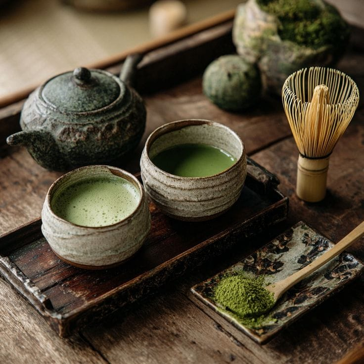

At Matcha Cafe, we believe in the power of matcha to bring calm and focus to your day. Our mission is to provide high-quality matcha beverages in a serene environment.
Matcha is a special type of green tea made from finely ground tea leaves. Unlike regular green tea where leaves are steeped and removed, in matcha the entire leaf is consumed, which makes it richer in nutrients. It is known for its bright green color, smooth earthy taste, and high antioxidant content. Matcha provides calm energy because it contains caffeine along with L-theanine, which helps improve focus without causing restlessness. Traditionally used in Japanese tea ceremonies, matcha is now popular worldwide in drinks and desserts like lattes, cakes, and ice creams.